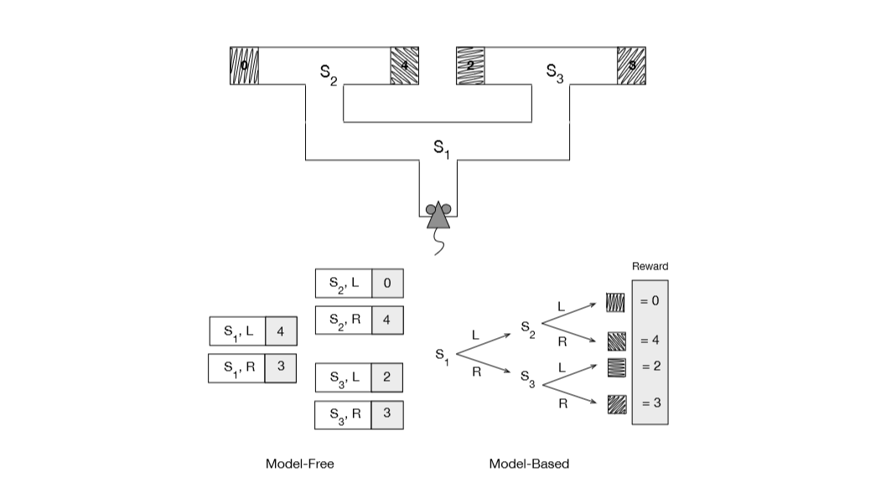

In this post I am going to talk about how RL concepts such as model based reinforcement learning, and model free reinforcement learning are similar and inspired from habitual and goal directed behaviors in psychology.
Habits, as mostly described by most psychologists, are behavioral patterns triggered by appropriate stimuli and then performed automatically. Goal driven behaviors, on the other hand, are inspired by the kind of goal one is reaching for and the relationships between actions and their outcomes. Habits are usually controlled by previous stimuli and goals are driven by their consequences. One of the issues related to habitual behavior is that it does not respond quickly to changes made in the environment.
In this sense, model free reinforcement learning is related to habitual behavior as it is also least resistant to change. If some thing changes in the environment, the agent has to traverse the environment many times again and again by obtaining rewards and in the same time updating its value function or policy.
But if we look at goal-based behavior, it is more open to changes and will adopt well if things change in the environment mainly because of planning. Model based reinforcement learning in the same way can accommodate changes easily. Any change in the environment will eventually change its policy right away and planning will help to predict the consequences of the changes that the agent has never experience before.
These concepts can be explained in a better way by showing the following example of a rat who is trying to navigate a maze which has rewards at its ultimate ends.
Left side of the figure shows the model free approach in which each state-action pair have rewards with them. These rewards have been gathered by completing the maze many times through trial and error. With this kind of method, rat just has to decide at each state the action with the largest reward.
Right side of the figure shows the model-based approach in which there is an environment model which includes states-actions-next states and a reward model which states the final rewards associated to each end. The rat in this method, can decide which way to turn at each state by using the model to simulate sequences of action choices to find a path yielding the highest return in the end.
The values in the state action pairs of model free method are used by rat to take maximum rewarding action. In this specific example, rat will choose to L from S1 and then R from S2 to get a reward of 4. On the other hand, in model-based method, rat will choose L and then R to get the same reward of 4 provided the model used by it is accurate.
Another important result from experiments Adams(1982) shows that by following a goal driven approach for a long period of time will eventually result into habitual behavior. Research done by Daw, Niv and Dayan (2015) shows that animals use both model and model free based methodologies to take actions. But over the course of time, model free process is more used as it becomes more reliable after it has gained enough experience using trial and error methods. This suggests that with more experience an agent can shift from model-based to model free processes.
Both fields research has an effect on each other and progress in one will eventually help the other one to grow too. Reinforcement learning theory has aided simplify thinking about these issues and animal learning theories can help make better agents in the computational world.
This post was inspired from the book “Reinforcement Learning” by Richard S. Sutton and Andrew G. Barto.